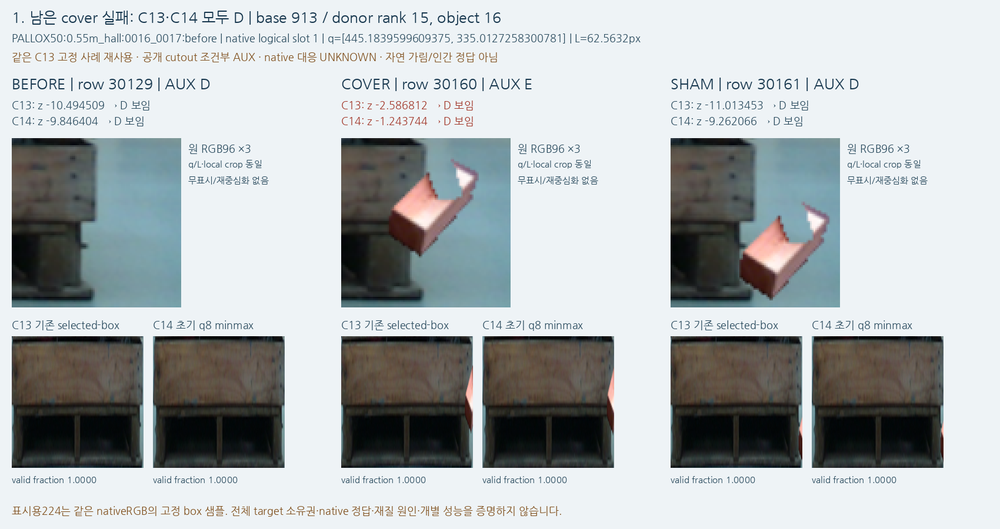
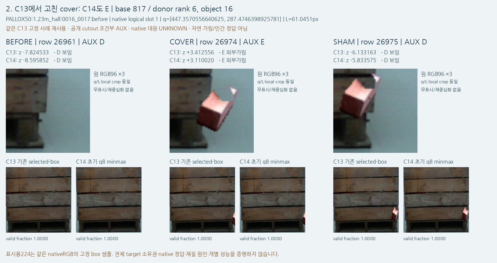
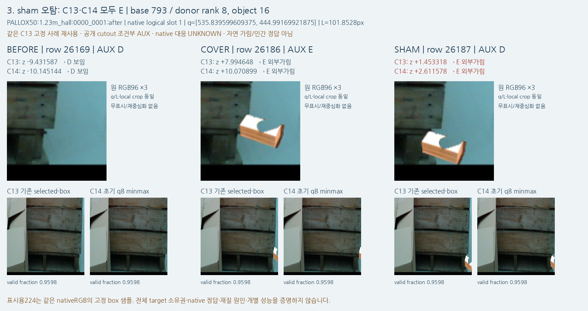

기존 C13 고정 선택을 재사용한 저장 출력 진단입니다. 세 사례의 판정은 그대로이며, 실제 새 current 결과나 원인 확정 자료가 아닙니다.
관찰 JSON · 픽셀 전 고정 선택 · 해시/샘플 영수증 · 전체 PNG
기존 cover 실패가 유지됩니다. local96에는 밝은 목재 cutout이 q 부근을 가로지르지만 두 context224에는 오른쪽 경계의 일부만 들어옵니다. C14 cover z=-1.243744는 C13 -2.586812보다 높아졌으나 여전히 D입니다. C14 cover-sham 차이8.018322는 margin2를 넘습니다.
대응 cue의 protected-support cover 인증을 보존한 AUX 오류입니다. RGB에 목재가 보이는지 또는 context 밖에 물체가 많은지 하나로 모델 실패 원인을 확정하지 않습니다.

이전 개선 cover는 C14에서도 유지됩니다. C13 cover +3.412556, C14 +3.110020이고 BEFORE와 SHAM은 두 모델 모두 D입니다. cover cutout은 local96의 q 부근에, sham은 더 위쪽에 보이며 context224에는 각각 가장자리의 작은 부분으로 들어옵니다.
같은 재질/비슷한 배치에서도 첫 사례와 판정이 다릅니다. 이 세 개의 선택 표본으로 재질/크기/box 변경의 개별 인과효과나 전이 성능을 추정하지 않습니다.

sham 오탐도 유지됩니다. q보다 아래쪽에 목재 cutout이 보이고 원 local96 중심4는 BEFORE와 동일한 기존 인증이 있습니다. C13 sham +1.453318에서 C14 +2.611578로 E 쪽 값이 더 커졌습니다. old/new context는 왼쪽 이물과 목재 구조를 함께 포함하고 오른쪽 가장자리에 cutout 일부가 들어옵니다.
sham D 레이블이나 원 q/L을 바꾸지 않았습니다. 주변 물체/넓은 수용영역의 영향 가능성을 볼 수 있으나, 이 그림은 feature attribution 또는 단일 원인 증거가 아닙니다.

선택된 세 사례의 판정은 C13→C14에서 모두 같습니다. 모든 q의 새 context 정규화 x는1.0으로 오른쪽 경계이고, 기존 box에서도0.962~0.997로 오른쪽에 가깝습니다. 고정 q8 box 통일은 이 사례들의 target-relative 문맥을 바꾸지만 box를 확장하거나 q를 중심으로 다시 자르지 않습니다. 원 local96에는 외부 cutout이 크게 보이는 반면 target224에는 대체로 작은 경계 부분만 보입니다. point-specific Q/P와 local branch가 실제로 어떻게 결합되는지의 원인을 이 픽셀 그림만으로 분해하지 않습니다.